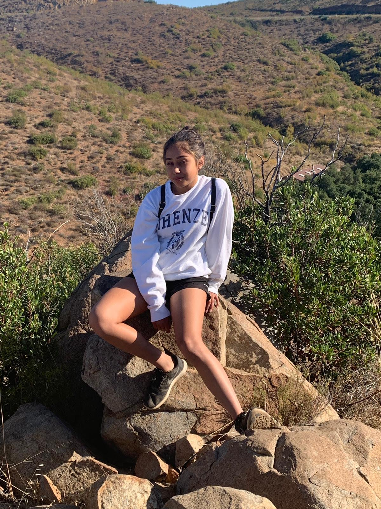

|  | If you ask young children what they want to be when they grow up, you will often hear ‘the president’ or ‘an astronaut’. As a small child, my answer was always ‘I wanna do something cool’. Ever since I was able to form sentences, I have always wanted to do something impactful and innovative. Not until high school, though, was I able to realize that engineering may just envelope both of those ideas. Now that I have had time to develop and explore this career path, I have also been able to set goals to achieve my idea of success. So far, I want to become some type of software developer. I plan to achieve this goal through hard work and continuing studying in the engineering academy. I think this career is a fit for my personality and abilities because some important traits of an engineer include leadership and dedication. Both of these traits are definitely something I have very prominently. I have learned leadership through my coaching experience and dedication through the various amounts of projects I have worked on. Working tirelessly with young children and making sure they listen to you and respect what you are saying can be very difficult at times and requires true patience and leadership abilities. I learned a lot from this work experience and am very glad I was able to take that opportunity. In addition, my other experiences such as projects also taught me a lot. I was able to interact with my peers and, even though we had some setbacks, keep persisting until we found a solution to our problem. I’ve gained a lot of knowledge through my life experiences so far, all of which definitely set me up for my future career. Since begining highschool, I have gained many accomplishments so far - but definitely hope to gain many more. I have collaborated on projects in my computer science principles class using MIT app inventor, Html, CSS, and python. I have also created and become the president of a club and, as I talked about above, coached U12 girls recreational soccer for Rage Though I do not have many accolades in high school currently, I hope to gain many more as the years go by. In conclusion, I have learned a lot through my work and school experiences so far but I definitely have a lot more to learn. I look forward to my career and plan to work very hard to reach my personal goals. Thank you so much for your time, I hope you enjoy viewing the rest of the website. |